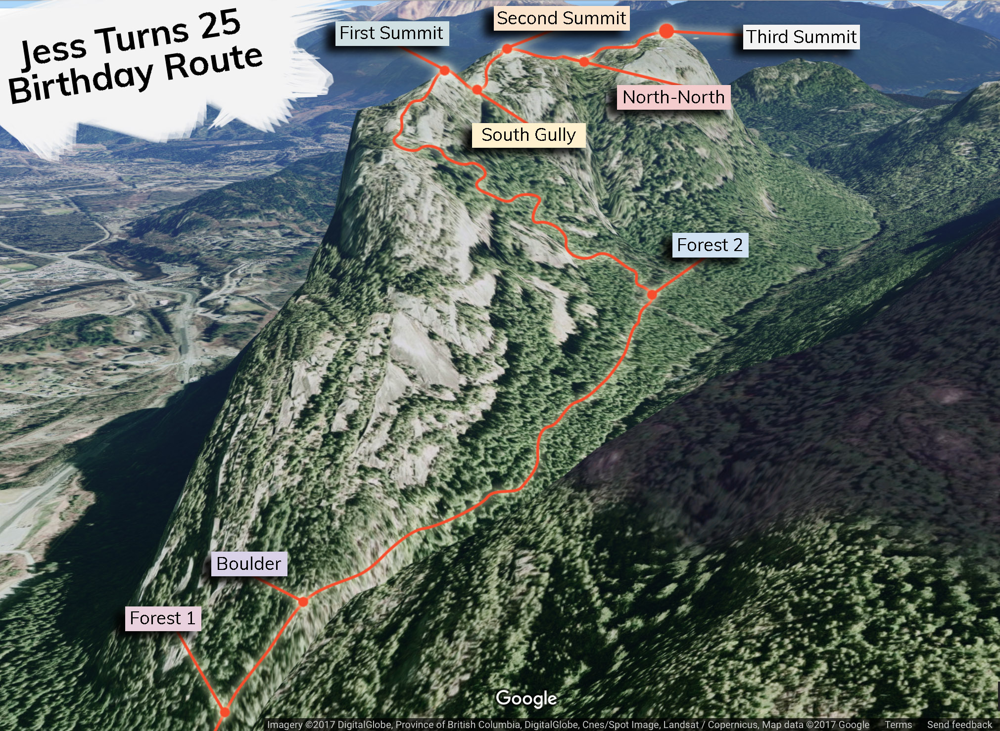

The Plan
On April 29th, 2017, the wonderful and glorious Jess Landing is turning 25. To commemorate this occasion, let's all work together to make a grand and embarrassing surprise party!
Just to reiterate, this is a surprise party. DO NOT tell Jess that this is happening!
I know it's long, but please read this invite explaining the event and RSVP with the form below. I look forward to seeing you there!
Who's Involved?
This event is being organized by me, Ben Clark. Throughout the planning of this event, please feel free to get in touch with me via:
- email: ben.clark456@gmail.com
- phone: (604)-440-9511 (call/text)
- facebook: ben.clark456
Currently, I have 19 people confirmed for the event, so we'll be a pretty large group! As we get closer to the date, I'll begin putting fellow party-goers in touch with each other as needed.
What's Going On?
Outline of the Day
I will tell Jess that we're going for a leisurely hike, just the two of us. This is a total lie, however, because you all will have the pleasure of surprising her along the way with fun and goofy challenges! After Jess finishes one of your challenges, you will join our ever-growing caravan, and we'll slowly meander to the Third Summit of the Stawamus Chief in Squamish where we'll have a fun and low-key party 'til sunset.
The Competition
So the goal of this whole competition is to show Jess a good time and make her birthday fun! Please keep this in mind when planning your challenge. This fun can be type 1 or type 2, but please refrain from planning anything too scarring. The rules of this competition won't be followed too strictly, so if there are any parts of the plan you don't agree with just shoot me a message and we can find a solution together :)
With that in mind, here's how this'll work:
Step 1: Make teams of 2 to 5 people. This whole plan will be the most fun if all the party-goers work together in teams. Please feel free to select friends to team up with, or if you want to meet new people that's great too! If you don't see anyone you know on the guestlist, let me know and I can set you up with a welcoming team. Ideally we don't form any groups of more than 5 people (or we will have too few groups).
Step 2: Make a silly challenge for Jess. These challenges will be planned and executed by you and your team. Plan something that will be just as fun for Jess to do as it is for you to watch! It could involve ridiculous costumes, loud singing, high-angle adventure, or really almost anything else! For ideas: Jess loves soccer, rock climbing, tv, food, and animals. The crazier the better!
Step 3: After you execute your challenge, join the caravan. We'll follow Jess through the rest of her challenges in a group of ever increasing size and silliness.
4. Attend the Awards Ceremony! Our rag-tag band of silly people will journey up to the summit of the Third Peak where we'll eat some food and determine the winners. The awards categories will be:
- Most Awkward Challenge
- Most Fun Challenge
- Most Weird/Ridiculous Challenge
- Funniest Challenge
At this point, we will all eat whatever food we've brough and hang out to watch a bit of the sunset in good company atop the Chief :)
The After Party
I'm currently trying to find a campground that will host our group for some drinks and campfire-timez after the day's adventure. If you know of a place we can go, let me know! A legal campsite with firepit will be ideal since the evening will almost certainly involve some alcoholic beverages.
Stay tuned for details...
Where is This Happening?
Plan A:
Ideally, this will be happening along the trail to the summit of the Stawamus Chief in Squamish! We will hike up the regular path to the First Summit, and then traverse the Second Summit to the Third via the fun, little "via ferrata" climbers' path descending the Raven's Castle on the First Summit. The following image shows the intended route with some possible "challenge station" locations. These marked locations are just suggestions, and if you have a better spot in mind that isn't on this map let me know!
Note some of the abbreviations in the map: "North-North" refers to the North-North Gully overlook, and "Boulder" refers to the Boulder Overlook along the Stawamus Chief trail.
Plan B:
In the event that it's stormy on April 29th, we'll mix things up and host the challenges at a variety of more sheltered locations in and around Squamish! These backup locations are Galileo Coffee Company, Fergie's Cafe, Paradise Valley bouldering area, Mag's 99, and Ground-Up Rock Climbing Gym. In this case, the bulk of the party and awards will happen at Ground Up, and we would ideally end the day at one of the superb breweries in town :)